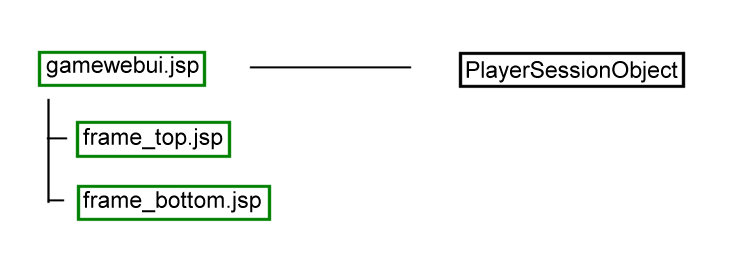

| Page: | index.jsp | select_game.jsp | load_player_scenario.jsp | simwebui.jsp |
| User Action(s) | User Logs In | User selects from the list of games | This page is not seen by the player. | Player sees the top header material and the selected bottom frame. |
User logs in ->
|
||||
| Directed to 'select_game.jsp' -> | ||||
| Directed to load_player_scenario.jsp -> pso.loadGameSections() called |
||||
| Directed to gamewebui.jsp |

The USIP Open Simulation Platform is a USIP Open Source Software Project.